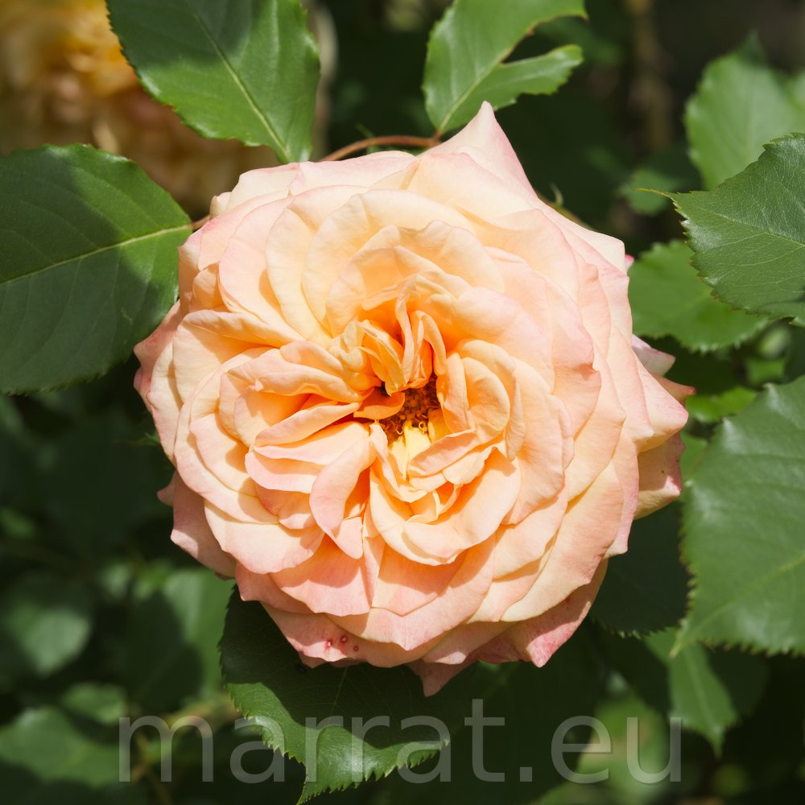
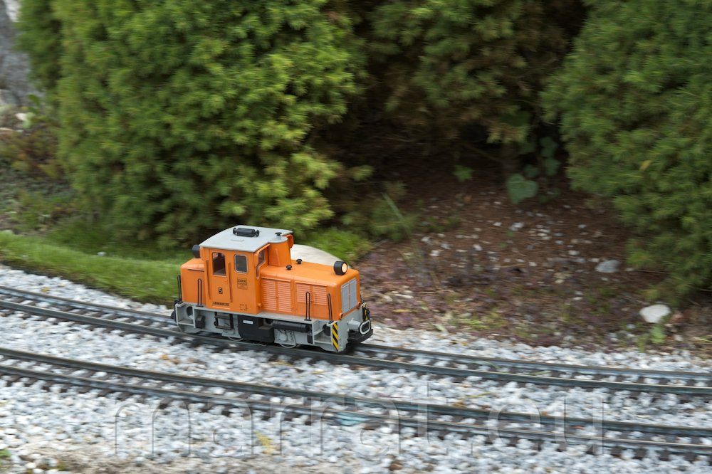
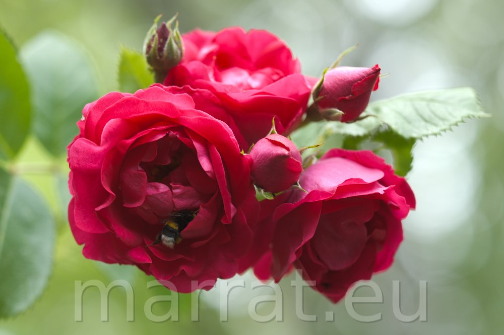
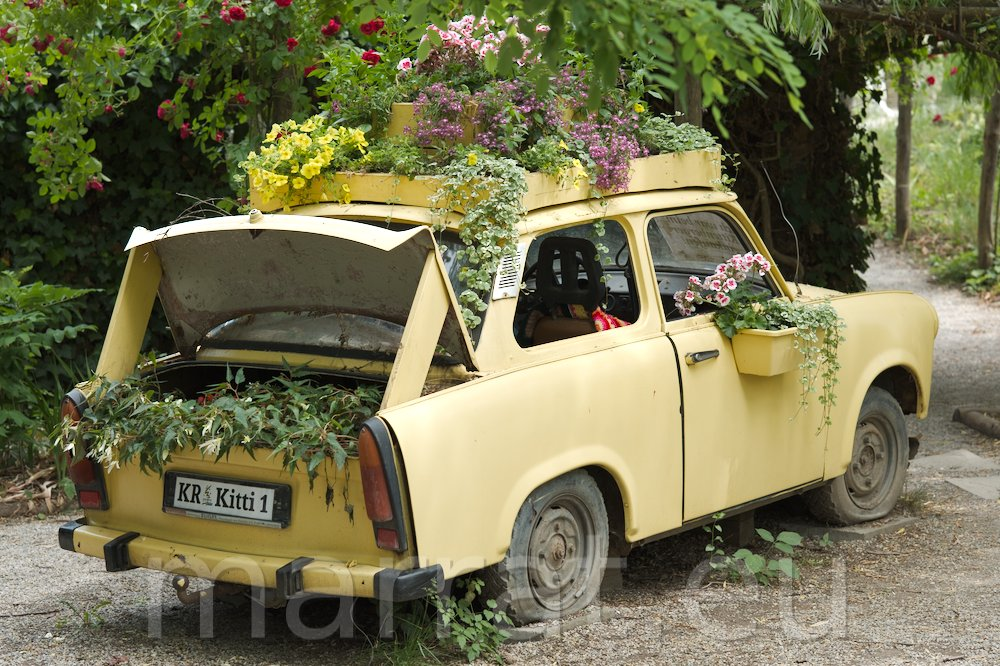
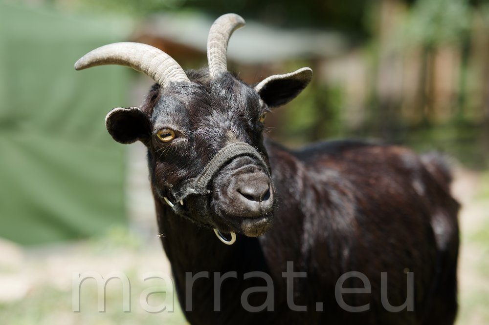
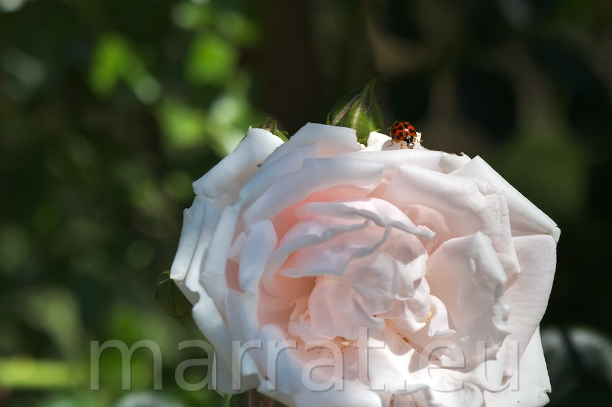

f/5.6 | 1/500s | ISO 125 | 56.0 mm
FUJIFILM X-T5 + FUJIFILM 56mm f/1.2

f/8.0 | 1/125s | ISO 125 | 56.0 mm
FUJIFILM X-T5 + FUJIFILM 56mm f/1.2

f/2.0 | 1/500s | ISO 125 | 56.0 mm
FUJIFILM X-T5 + FUJIFILM 56mm f/1.2

f/3.2 | 1/125s | ISO 125 | 56.0 mm
FUJIFILM X-T5 + FUJIFILM 56mm f/1.2

f/2.0 | 1/1000s | ISO 125 | 56.0 mm
FUJIFILM X-T5 + FUJIFILM 56mm f/1.2

f/4.0 | 1/2000s | ISO 125 | 56.0 mm
FUJIFILM X-T5 + FUJIFILM 56mm f/1.2